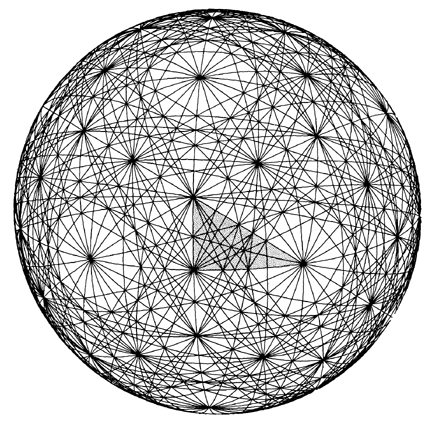

|  |
| Fig. 987.132E Composite of Primary and Secondary Icosahedron Greate Circle Sets: This is a black- and-white version of color plate 30. The Basic Disequilibrium 120 LCD triangle as presented at Fig. 901.03 appears here shaded in the spherical grid. In this composite icosahedron spherical matrix all of the 31 primary great circles appear together with the three sets of secondary great circles. (The three sets of secondary icosahedron great circles are shown successively at color plates 27-29.) |